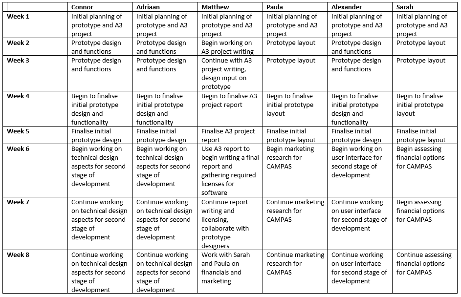
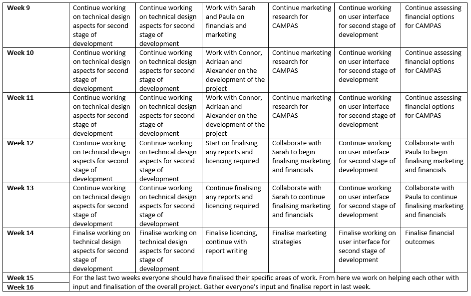

We have chosen to name our group Campas. It is simply an acronym of our names, incorporating everyone in the team.


My interests in IT came at a young age when I was excited by any technology that I could get my hands on. Slowly my passion became more honed, I got my first computer and quickly became the families go to IT fixer. I studied more and more until starting my Cisco Course for Highschool. From studying networks in high school, to messing around with tech outside of class, every part of the industry fascinates me. My interest in IT began when I was young, as my father has a background in IT software, which exposed me to newer and newer technologies as time went on, that spurred me on to seek out more knowledge by myself.

I am 23 years old with South African background. I can speak 2 languages and have a brief education in Mechanical Engineering. To me, IT has always been interesting. Since the age of 5-6 I would always spend as much time as I could learning more about IT. I started out on my dad’s Windows XP computer writing my name in font size 72. I then built my dad’s business computers with his IT consultant when I was 9. I still do not feel informed and capable to do as much as I would like to. I am very interested in App development, software creation and hardware solutions to make everyday life easier.

I am an avid sailor with over 20 years' experience and served 6 years in the army. I completed my Cert III in Heavy Vehicle Road Transport and my Cert IV in Engineering (Fluid Power) during my time in the Army. I completed my Cert III in Light Automotive Technologies last year while working for Warrnambool Toyota. My main interest in IT would be computer hardware. As I undertake system integration for customers, keeping up to date with current hardware options is a must. My interest in IT started approximately around the age of 7 when I was given a small DIY, build a computer kit for my birthday. Since then I started building and upgrading PC’s as a hobby, which turned into a side job after I discharged from the Army. My experience in IT has been mostly limited to the hardware side of the industry.

I was born in Chile and immigrated to Australia with my parents at the age of 4. I have completed all my education in Australia. I am fluent in Spanish. I am married, live in south west Sydney and have 2 teenage daughters and 2 dogs. I moved around in a few roles and eventually ended up in a team which was called ISBU (internet & service provider business unit). Working in this team we delivered data/mobile services to wholesalers and service providers. My interest in IT was generated while working there and becoming a sme in Ethernet international product. I spent considerable time working through process problems with the product manager. I often felt that the only difference between us was he had a degree and felt that the lack of formal qualifications was holding me back from achieving more in my work life.

I was born in Alice Springs NT, and moved to Brisbane when I was 6 years old. I have worked in the hospitality industry for over 10 years now, doing everything from housekeeping and bartending, to functions supervising and restaurant management. My last job was a night manager position for 2 years at a large backpacker’s hostel with bar attached. My interest in IT started when I was very young playing video games and has only grown over the years, but unfortunately my experience in IT is a little lacklustre so far. I play guitar and other instruments and even studied an Audio Engineering and Sound Production course a while back.

I am currently completing my second year of my Bachelor of Business – Logistics and Supply Chain Management at RMIT. I have accumulated a collection of Diplomas and Certificates over the years; Logistics, Customs Brokerage and Aviation Security are just a few. I really enjoy reading and writing, and I even attended the FIATA World Congress 2018 as a delegate and guest speaker, in New Dehli, India. I am eager to learn and establish how software can communicate with one another to enable business operations to run smoothly and cohesively to provide the most effective outcome. I have always had an interest in IT, but can safely admit, it has increased by far since beginning my Bachelor’s Degree in 2018. This is because my course is through an online forum and requires me to utilize an array of software and websites to complete my degree.
The Myers-Briggs Test shows I am a Turbulent Mediator – INFP-T Diplomat. The outcome of these results is scarily true, the more I read the more I aligned with everything it was saying, being from work habits, work and life flow balance, friendship. I think this would benefit, working as a small group, as I tend to thrive in that area, I’m wanting everyone to do well in the group. I think this would benefit, working as a small group, as I tend to thrive in that area, I’m wanting everyone to do well in the group, but also learn and grow more, as I’m more than happy to help anyone even if I’m not sure what the answer is myself.
The Learning Styles Test shows I am 32.6% Pragmatist, 32.6% Reflector, 25.8% Theorist and 9% Activist. I really do like to stand back observe and see how everything is done, then reflect on what I have seen and make my own decisions and conclusions, sometimes a considerable amount of time and effort are required to develop these ideas. I think the results from this test show that I would be good with discussions, showcase/demonstrations, feedback from others and coaching. Having a group discussion to find out what people have sound knowledge and fill in the gaps, I would not push someone away if they came to me looking for help.
The Big 5 Personality Traits Test shows I am predominantly Agreeable and Conscientious towards others.
The results for this test show that I’m clearly an introvert, that doesn’t have great emotional stability, am generally agreeable, but at the same time conscientious of my actions, but also approaching the situation with intellect and imagination. It might be a little hard for me to keep communication with people, as my introversion and emotional instability might not agree sometimes, thus making me hard to contact. Try to not let my emotions get in the way too much when it comes to uni work. Take breaks every so often to not let everything get too over whelming. Let the other members know that I am prone to sudden drops in mood.

Being a Tactile learner, the jobs I would find most useful and appealing would be those that require me to do something. Thus, jobs such as IT repairs, software and hardware development and IT integration would be best suited to me. Additionally, as a Campaigner, I am very curious and observant, which would help me to see things others may miss and offer unique perspectives in the workplace. However, I do find it difficult to focus on tasks that I find little value in, so being aware of this would help in responding to the issue should it arise. From the OCEAN test, I also found that I was very agreeable and conscientious, meaning that I would be able to help and support those around me, whilst being able see the big picture.
My results indicate that I favour being in more of a leadership role. This would impact my behaviour within a team as I would try to lead and organise the people to complete a task in an efficient way. As an extraverted person, working in a team would suit me as I can communicate and bounce ideas off of others. However, I do like to work independently, as described in the Myers-Briggs test. This may impact my ability to work collaboratively in a team as I would want to have my own role and not share a role with someone else. As a leader, I would use my position to the benefit of the team, not myself. If I were in a team where I could not take a leadership role, this may cause me to feel boxed in and numb my creativity. As a Campaigner, this would be very difficult as it would lead me to become less focused and enthused.
When forming a team, I should make sure that I am not trying to do the same role as someone else. Rather, I would clearly define and understand the role that I have and the roles of the team members. I would be aware of my tendencies towards others and adapt to the circumstances to help those around me so we could succeed together as a team. From the Myers-Briggs test, I found that as a Campaigner, I have a keen ability to compliment the communication and experiences of those around me whilst offering exciting and unique ideas to projects. Campaigners are excellent communicators and are very approachable, so I would be able to get to know those around me well and make them feel comfortable in the work environment.

The defining characteristics of integrity, practical logic and tireless dedication to duty make Logisticians a vital core to many families, as well as organizations that uphold traditions, rules and standards, such as law offices, regulatory bodies and military.
The results of my tests were very consistent based on how I work and interact with those around me. I am acutely aware of my weak points when it comes these tests as it is something that I discovered during my training in the Army. During my leadership courses and other subject courses we conducted more in-depth testing around our learning and leadership style. It was during these courses that it was pointed out to me that I have excellent leadership qualities, but I need to be far more aware of what my team's capabilities are and to make sure that communicate better with those around me. This is something I have been working towards improving on during and after my time in the Army.
These results may end up having a negative impact on certain types of required teamwork. I am a very dominant personality and work better when I oversee a group. If another member of my group has a similar personality type to myself, we could end up clashing and not being productive. Ideally, I would be in a group where I could delegate tasks to those who were best fitted for that role, while also providing my own input in other areas. If I am unable to fill the role, I am best suited to, I understand the requirement to adapt to my group’s needs. Although the above paragraph seems to reflect negatively upon myself, this does not mean I am unable to work with others. Putting the groups needs before my own is something that I have worked extremely hard on in the last 4 years.

The results of the various tests consolidate many personality traits that I realise I have but do not think too deeply about. They reaffirm what I believe some of my skills are and assist in writing cover letters and resumes around my strengths. The results further suggest that I possess desirable traits sought out by employers. For example:- inner drive and ambition to excel in given roles shown by a willingness to work to project completion doing whatever is required and invest in accomplishing tasks to the best of my capabilities. It is important to continue to develop my skills as the test results indicate that the skills are highly desired by employers.
I believe I am a team player and the personality tests seem to agree with that. I just want to get things done, completed to a high standard and would do well to find other similar minded people. The results provide a motivational boost to keep striving as a team player as well as reaffirming my own personal goals to be a valued member in a team driven environment. The results indicate that even though I’m a driven individual this trait requires balancing within a team environment, as overly extremely driven traits can also hinder overall team goals.
I would struggle with disorganisation and chaos and would start assigning tasks, this may or may not go down well, however due to being time-poor. It is important to pull together teams that have a range and balance that fit the overall team/business objectives. In addition to needing achievement driven individuals one would also need team members with other soft skill sets in order to ensure the team environment operates at its optimum.

The Campaigner personality seems to be a free spirit. As described in the test results, a Campaigner can often be the life of a party but is more interested in the social and emotional connections they make with people, rather than the sheer excitement of the moment. I believe for me; this test shows that while I can sometimes be quiet and reserved, thinking more with my heart than my brain, I can still be quite confident, calm and collect in many situations. This can be a beneficial trait for creating and working in teams, as I can find it easy to empathize with others it is easy for me to get to know people on a personal level, making it easier to connect and express ideas and solutions between each other. Downsides to the Campaigner personality can be finding it difficult to focus, being easily distracted or overthink things too much. I can also sometimes start working independently, drawing focus away from the group.
The Learning Styles Test through Emtrain.eu indicated that I am mostly a Reflector and an Activist. Emtrain describes Reflectors as those who tend to be more cautious who prefer to stand back and observe. They take the time to collect and interpret information to help them reach their goals. Reflectors usually look at the big picture by gathering information from previous experience as well as current study. With working in groups, Reflectors work best with paired discussions and demonstrations. I believe this is quite accurate, as I do tend to be more cautious and take the time to observe while collecting information.
The Leadership Style Quiz by the University of Southern California states that I am a Postmodern Leader. A Postmodern Leader is someone who understands that leadership requires both logic and creativity. They see true human potential, and the role of a leader can be enjoyable. The Postmodern Leadership style is a valuable commodity for improving possible career outcomes. When forming and working in a group, the confidence of a leader and aspiration to help others can be very beneficial. One problem with a Postmodern Leader working in groups is ego. Sometimes I can feel the need to be the one in control, or even sometimes dismiss other opinions.

Myer-Briggs Test -Being described as a protagonist, this generally means that I am a natural-born leader with a strong personality. I am passionate about what I do and strive to understand not only myself, but others around me and genuinely show an interest in people. I am constantly motivated to improve myself and my skills and tend to seek stimulating challenges and experiences.
What’s Your Learning Style? –My results imply that I am a visual learner. This means I understand and remember things mainly by sight and I generally am organised and neat when it comes to learning. It also means that can easily be distracted by sounds and can have some trouble with spoken instructions.
Big Five Personality Test –This test, noted that I was outgoing and social, optimistic and friendly, but that my imagination tends to be conventional and I can often be impulsive.
It is clear that I have a strong personality and may come off as assertive, but is it met with genuine intentions. For the most part of previous group projects I have taken lead, completing more of the complex tasks and finalising the assignments on behalf of others. This has come without hesitation and realisation of what I am doing.
Knowing that I have these personality traits, has made me realise I need to step back and work more cohesively with my group and take others ideas into account. As IT is a new topic for me, I feel less inclined to take charge and more inclined to learn and contribute.

"Our group Campas is made up of 6 unique individuals. While some of our personality traits and learning styles are quite similar to each other, like leadership qualities and confidence working with others, we all seem to have a wide range of strengths and weaknesses between us. When looking at the personality tests for everyone, it was apparent that we all share some specific attributes, while in other areas some of us may be more confident than others. We each have our own weaknesses (as indicated in our individual tests) but working as a group we should be able to match those weaknesses with others’ strengths and all help each other. We have all been shown to have confident personalities when it comes to working in groups; we are comfortable communicating and sharing, and not too shy to ask questions. As expected from our learning styles tests, forming this group was quick and easy, everyone was on-board and eager to learn right from the start."
After reflecting on the group processes of assignment 2, it seems not much has changed. Although there has still been a bit of a lack in communication, we have managed to control the organization and deployment of our work for assignment 3. Much the same as our previous assignment, each of us has chosen a role that we feel confident in and started working on our own sections, while providing commentary and feedback on each other’s work.
16Personalities “Myers-Briggs personality test” - Viewed Online; https://www.16personalities.com/
Emtrain “Learning Styles Quiz” - Viewed Online; http://www.emtrain.eu/learning-styles/
University of Southern California “Leadership Style Quiz” - Viewed Online; https://eml.usc.edu/leadership-style-quiz
OpenPsychometrics “Big Five Personality Test” - Viewed Online; https://openpsychometrics.org/tests/IPIP-BFFM/
Campas is comprised of people with a broad spectrum of interests and potential career paths. Though all of us are looking at careers that incorporate different elements of IT, we all aspire to achieve different goals. Most of our desired careers are focused on different forms of engineering, from networking and operations, to sound production and systems engineering.
From our Groups ideal jobs, will break it up into 2 parts, being General Skills, and IT- specific skills. Our groups general skills set consists of Communication skills, for talking to customers or communicating your point effectively to team members or co-workers to achieve the best result without conflict. Problem solving and troubleshooting will come into play a lot with typically the Engineer roles, but with other non-IT based roles it ties in nicely with communication skills. Teamwork/ Collaborations and time management bundle well, as if you can manage your time well and work in a team, bigger projects can general be completed faster. Some of the other skills required outside of the IT based roles are skills really needed in areas such as; building effective communications as this will help any business manager to maintain business relations for considerably longer, or being detail-oriented in the music industry would help to pick up the little things that most might miss.
Connor is looking to be a Network engineer. A Network Engineer is responsible for managing a network, having a background in networking, routing and security. “The job is appealing to me as it utilises previously known skills and places me in an environment that would enable me to constantly develop my skills. To start with a plan on working towards the qualifications I need for the job, I would need to gain more experience with switching protocols used in an Enterprise setting, gaining a professional certification for CCNP, hopefully an internship once I have the qualifications necessary.”
Adriaan wishes to be a Senior Systems Engineer. An essential element of supporting learning and innovation along with College operations, is a committed team of technical service professionals. The Senior Systems Engineer is a middle leadership role and will play a pivotal part in the recently formed Knowledge Services team (combined ICT and Information Services). The Senior Systems Engineer will be an enthusiastic and skilled IT professional, with experience and a passion for serving the teaching learning and operations of a dynamic and innovative school. They will see this role as an opportunity to partner with a great leadership team in making a positive change to our IT operations across the organisation, committed to maintaining a growth mindset and actively exhibiting the character and attributes of a lifelong learner.
Matthews ideal job would to be an Operating System Engineer. “The role requirements for this job are a bachelor’s degree in IT but ideally, I would prefer to further my studies before undertaking this role. Personally, I would like to complete my master’s degree of Information Technology to further my knowledge in the field. The operating system engineer role links my passion for computer hardware with the software requirements of operating systems. I have some amount of knowledge of the hardware requirements for some specialised systems such as NAS, raid setups, server hardware, etc but I lack the knowledge needed to perform troubleshooting and diagnosis of the software systems.”
Paula is aspiring to be a Solutions Architect. “Digital innovation role to work with customers help solve problem or opportunity that they deem significant in their community/domain and that relies at least partially on information technologies. The Solution Architect plays a critical role by applying the latest cloud computing technologies, application architectures, and integration approaches to each Digital Innovation engagement. I find this appealing because I want to learn more about cloud technology and understand at a deeper level what solution architects do and how they devise individualised solutions for a specific client requirement.”
Alexander is striving to be an Audio Engineer. An Audio Engineer is a trained professional who works with the mechanics of recording, mixing and reproducing sound. They can work in many different areas from recording and mixing music in studios, handling the technical aspects and sound levels of live gigs/festivals, and even audio design and production for video games and movies. “I have developed an interest in audio engineering ever since I could pick up a guitar. As much as I wanted to play music, I also loved the idea of sharing music, which got me on the idea of recording and mixing. After learning a lot about music in school, and many years of random experiences since, I found that audio engineering encompasses a lot of my biggest interest, like music (live and mixed) and video games.”
Sarah is working towards being a Supply Chain Business Operations Manager. Supply Chain Managers are responsible for overseeing and managing company’s overall supply chain and logistics strategy and operations in order to maximize the process efficiency and productivity. In addition, they play a crucial role in developing and maintaining good relationships with vendors and distributors. “Working as a customs broker, my role is just one aspect of many supply chains. This position appeals to me, as it will identify how a particular supply chain operates from start to finish and what is involved in operations across the whole supply chain.”
After comparing the career prospects of each member, it is apparent that we are all choosing rather different directions. Although Network and Operating Systems Engineers can end up working similar roles to each other, an Audio Engineer or Supply Chain Business Operations Manager roles are quite distinct and can be involved in completely different industries. Working towards various industries, we all require the same steps to achieve our goals; Study certain fields to achieve the necessary degrees and network/communicate with others in those fields to try and source work.
New Horizons Computer Learning Centers “How to become a Network Engineer” – Viewed Online; https://www.newhorizons.com/article/how-to-become-a-network-engineer#:~:text=Network%20engineers%20(also%20called%20network,default%2C%20the%20entire%20organization).
Entech US “Senior Systems Engineer” – Viewed Online; https://entechus.com/senior-systems-engineer/#:~:text=Position%20Summary%3A,technology%20of%20their%20assigned%20accounts.
Indeed Career Guide “Learn About Being a Systems Engineer” – Viewed Online; https://www.indeed.com/career-advice/careers/what-does-a-systems-engineer-do
Career Explorer by Sokanu “Solution Architect” – Sokanu Interactive Inc. 2020 – Viewed Online; https://www.careerexplorer.com/careers/solution-architect/
Career Explorer by Sokanu “Audio Engineer” - Sokanu Interactive Inc. 2020 - Viewed Online; https://www.careerexplorer.com/careers/audio-engineer/
TalentLyft, Talent Acquisition Software “Supply Chain Manager Job Description” – Viewed Online; https://www.talentlyft.com/en/resources/supply-chain-manager-job-description
GitHub Repository: https://github.com/s3865351/CAMPAS.github.io
GitHub Pages: https://s3865351.github.io/CAMPAS.github.io/
Attendees: Matthew, Paula, Adriaan, Sarah, Connor, Alexander
Topics bought forward from last meeting: Nil
Agenda items:
Attendees: Matthew, Paula, Adriaan, Sarah, Connor, Alexander
Topics bought forward from last meeting: Storyboard and script for A5
Agenda items:
Attendees: Matthew, Paula, Adriaan, Sarah, Connor, Alexander
Topics bought forward from last meeting: Nil
Agenda items:
Paula, Adriaan, Connor
opics bought forward from last meeting: Prototype design
Agenda items:
Attendees: Matthew, Paula, Adriaan, Sarah, Connor, Alexander
Topics bought forward from last meeting: Script/Storyboard for A5, CAMPAS prototype, A3 written aspect
Agenda items:
Attendees: Matthew, Paula, Adriaan, Sarah, Connor, Alexander
Topics bought forward from last meeting: Script/Storyboard for A5, CAMPAS prototype
Agenda items:
As with assignment 2 our GitHub repository commits, and activity log are not an accurate reflection on how our team functions. Knowing how to delegate and leverage those without a sound IT foundation into other aspects of the assignment is paramount to a functioning group.
Our idea focuses on an all-encompassing medical monitoring application that is able to be integrated into and used with wearable technology and to adapt some other wearable/monitoring medical technologies for people who require higher levels of medical monitoring. The potential outcome of this technology is to streamline critical care for at-risk individuals by a series of alerts and notifications to which the appropriate care facilities can react quickly to. As with our group name, we have chosen to call it CAMPAS.
Everyone has parents or grandparents who are elderly. We all know people with disabilities or other ailments. Why not use technology to help care for our loved ones? Some elderly people when they have a fall, or a heart attack receive medical treatment too late. This is a fatal problem. People with diabetes who imperfectly monitor their insulin levels can have fatal consequences. The same can be said for many other medical problems. The issue is often not that there is no care available, but rather that when these emergencies happen nobody knows that it has happened.
The adaptation of wearable technology into our application is essential in preventing the above outcomes. This fits in line with current trends of more advanced medical monitoring which comes with wearable technology such as the Apple watch.

There are a variety of wearable technologies on the market such as the Apple watch, Samsung Galaxy Gear, Garmin Fenix and the Casio G-Shock. Most of these devices have basic functionality when it comes to medical monitoring, but none provide a higher level of monitoring. There are also several mobile applications such as WebMD, Instant heart rate and Glucose buddy, but they are only able to handle the specifics which pertain to their area. Our application is all encompassing, to provide all of the above functionality with improvements such as critical care alerts, prescription tracking, integration of My Health Records and information storage for each individual.

The main aim for the CAMPAS application is to provide a modern medical application for the monitoring and assisting of at-risk individuals. There is currently a gap in the market for an application that provides a high level of functionality which includes a variety of alerts and reminders. There are plenty of specific care related devices or applications but few that are able to provide up to date medical alerts and real-time information in one place.
Our goals, in order of priority, that we would need to achieve to assist in meeting our aim are to:
Password for website link: "Campas123"
The CAMPAS project was formed from Paula’s assignment one idea. Her idea came about after her own personal situation, which created the need to make multiple medical appointments during the course of a week. This is obviously very time consuming and difficult to do if you have fulltime work commitments. Her application included the function to send test results directly to their respective GP, rather than needing to make an appointment.
Paula’s project idea was to expand on the Apple watch health monitoring systems and other wearable technologies like it to create a real time alerts system that would assist general practitioners and other health care professionals in making more timely appointments and assessing their health patterns.

We formed our group for assignment 2 in week three of our introduction to IT course and began the planning for our outcome. While we waited for feedback on our respective assignment 1 work, we began the initial planning stages of our website and working out what each other's strengths and weakness were. The planning stages were crucial in setting up our lines of communication and planning for our project idea.
We developed our project idea from Paula’s assignment 1 project because it was most suitable to be expanded on and filled a gap in the market. Our project, CAMPAS, is an all-encompassing medical monitoring application that is able to be integrated into and used with wearable technology and to adapt some other wearable/monitoring medical technologies for people who require higher levels of medical monitoring. While this is the current iteration of CAMPAS there were several deciding factors in how we came to this outcome.
Expanding on Paula’s idea we moved forward into creating CAMPAS, which has higher levels of functionality regarding the alerts system, real time data input to trigger alerts depending on severity, a base application to cater to all wearable technology users and storage of relevant medical information within the application. Making CAMPAS available to everyone, regardless of what technology they use, was of extreme importance to us.
There were several trains of thought after we received our feedback from assignment 1. Initially Matt looked into expanding on a specific diabetic based application which would help those with either type 1 or 2 diabetes manage their condition more effectively. Although there is a market for such an idea the general consensus was to create an all-encompassing medical application which would include functionality to help people from all walks of life with varying aliments, diseases and disabilities.
With the base idea of the project formed we set about researching the technologies required to run our application. There are a lot of platforms available for mobile application development but ultimately, we settled on Google Firebase due to it being freely available, the flexibility it provides with scaling storage and programming language support. We also needed to decide on a machine learning algorithm to run the alerts system within our application. A considerable amount of time was spent researching to find out which one would best suit our application, as the function of the machine learning algorithm is an integral part of the alerts system. For this we chose a RandomForest machine learning algorithm as it was best suited for our needs.
After submitting our assignment 2 and getting the feedback, CAMPAS was well underway for further development. We took into consideration the feedback we received from assignment 2 and narrowed down the software and hardware requirements we needed. We narrowed down the programming languages to Python and C++, kept Google Firebase as the development platform and kept the RandomForest machine learning algorithm as they best suited our requirements.
Work then began on our prototype for CAMPAS using Adobe XD. We opted for a simplistic design for the CAMPAS application as we needed to consider the varying types of people who would ultimately be our end user. Things like larger buttons, ergonomic design, larger alert screens, etc, we’re all taken into consideration during this development stage. Currently, the initial stage of the prototype is mostly complete with some minor tweaks needed depending on feedback.
We worked together on various different aspects of the prototype to best decide on what would be included in the application. Our current product is the result of everybody’s hard work and dedication to achieve the goals we set out for CAMPAS. While we know this is only the beginning of CAMPAS it is something that we can foresee making its way onto the market in the future.
Whilst research has suggested that wearable technology is a dead end, we are remaining exceptionally optimistic as we believe a product idea such as ours isn’t there to win a popularity contest, but more so to have a device on the market that focusses on the health and wellbeing of its users.
From a research perspective we have been discussing potential grants, initiatives and contracts we may be able to negotiate to make sure our product is protected, and adequate funding is raised.
Thus far, we have submitted our application to for our provisional innovation patent as we predict our product to have a short-term market life that may be superseded by newer innovations in the years to come. This patent lasts up to eight years and is more cost effective than the standard patent and after much research and consideration looks like it will be more accommodating to technological advances such as ours.
We are also mid-way through our application for a BioMedTech Horizons initiative grant supported by the Australian Government’s Department of Health, as we believe our product meets the specifications to successfully obtain a grant to assist in the funding of our product. The initiative aims to;

Whilst our product isn’t a relatively new concept overall, it does add onto current technological advancements focussing more on those indecently living with existing medical conditions, or they may be susceptible to health conditions.
We are planning to compose an extensive proposal to the Australian Governments’ Australian Digital Health Agency (who is the system operator behind the ‘My Health Record’, the platform storing all of Australians key health information), to illustrate how our product and their platform should be integrated and what the benefits of this collaboration will convey. We are also intending to discuss potential contract negotiations with exclusive rights to data our device and application collects.
We are also planning to register Copyright for our products innovation plan, design rights and software codes that we have created to ensure our product is protected from external parties.
The ideal parts of the project that would need to be completed are the information processing from the wearable technologies and the machine learning algorithm which provides the core of the medical alerts system. It is critical that we keep to just these two goals as they require the most amount of work to develop, if they can be developed quicker than expected then we can start on some ‘stretch’ goals. Parts of our application such as the prescription tracker, settings and guides are not necessary to allow our application to function in its most basic form.
The tools and technologies required for our integrated CAMPAS solution are as follows:
Google Firebase is the platform which the mobile application will be created on. This is a free platform that is integrated with the Google Cloud Platform so we can scale our application to the needed size. It also has a subscription-based plan available to increase the size of the cloud storage if necessary.
Having done more research on what machine learning algorithm would best fit our application we still settled on a RandomForest. Although it will not clean our data and may overfit our mobile application this is counteracted by having extremely accurate data input points. As we are dealing with a medical based mobile application accuracy of the input data is our most important focus.
My Health Records can be integrated into our application via the Mobile Fast Healthcare Interoperability Resources Gateway which is provided by the Australian Digital Health Agency. This provides a read only login with your MyGov credentials which the mobile application can read the appropriate data from. The are several steps to integrating this into our application which are outlined in the link below.
https://developer.digitalhealth.gov.au/my-health-record
Testing our mobile application can be done once we integrate the wearable technology and write the code behind the alerts system as these are the core of the overall outcome. A small sample size of people would be required, at a minimum of 10 to judge the veracity of the application. They would also need to be defined as ‘at-risk’ patients so we can test the accuracy of the results.


In developing a medical based mobile application there are inherent risks involved with several of the processes. In testing how our machine learning algorithm works with someone who requires critical care, if the machine learning algorithm overcompensates on a variable and contacts emergency services when it isn’t necessary or not contacting emergency services when is required are risks that apply to developing this mobile application. The accuracy of our application is paramount in how it functions overall so eliminating as many unnecessary risks as possible is of high priority.
The communication between our team predominately takes place on MS Teams with some communication taking place via SMS or phone calls. We aim to meet two times a week but understand that it isn’t always possible with most members having life commitments to attend to. We’ve leveraged MS Teams to our advantage being able to have all our work collectively in one place meaning that most group members understand what is taking place and when.
Having a Team leader/Project manager is paramount to the overall success of the project. Ideally, they would have previous Team leader/Project manager experience as well as a background in mobile application development and design. Previous experience (2 years +) with both Python and C++ are necessary.
The Creative design leader is responsible for the overall look and functionality of the mobile application. Previous experience in UI/UX and mobile application design is preferred but not necessary. To fulfil this role, you would need a keen eye for design ergonomics and an understanding in what designs the end user would want.
The Lead developer is responsible for the writing of the code to run the mobile application. They would work alongside both the Team leader and the Junior developer to write the necessary code. High levels (3 years +) of previous experience in both Python and C++ are necessary and experience in using Google Firebase would be preferred
The Junior developer's role is to assist and work alongside both the Team leader and Lead Developer. Applicants would need at minimum a Certificate IV in Information Technology, but a Bachelor of Information Technology would be preferred.
Our group this time around worked a lot better on co-ordination with meeting times while the conversation in all of our meetings was always constructive, while assigning work to each member, our group members individually chose what they wanted to do relative to the background they had. While our GitHub repository history might not show much, a lot of the work done in teams was a good building block from Assignment 2. I feel each member pulled their weight accordingly and in turn I’m happy with what we have accomplished.
We were able to work together well as a team. Dividing up the work earlier than last task was much better to know who is doing what. This enabled us to get a lot of the work done sooner. Whilst we were able to get the work done sooner, we were able to give each other more feedback to improve the result of the task. Being able to use the different skills of the group members that were best suited for the tasks, was essential to the successful completion of the assessments. Having more regular group meetings was useful to coordinate and monitor what needed to happen next. Everyone did their best efforts to help the group succeed.
With our lines of communication already established getting started on A3/5 was had a less bumpy start than A2. Early on we established the roles everyone would undertake, thus splitting the workload across the areas of most importance. With our processes and roles in place we began our work on each of our assigned sections. Sarah and Paula handled most of the A5 script and storyboard while having creative input into A3. Adriaan, Connor and Alexander handled most of the A3 prototype and development while having creative input into A5. I handled most of the written aspect of A3, while having creative input into both the A3 prototype and A5 written component. Although, once again our communication was a little lacklustre, due to us establishing roles early on we were able to continue working in groups with relative ease.
Communications were via various platforms, text, MS teams, emails. Working with a remote team there were challenges in achieving meeting times that were suitable for all team members however everyone still made a conscientious effort to attend and we all still contributed as a team. All team members contributed in line with their strengths and we all participated in collaborative sessions for feedback and driving the project forward. Given all the challenges that this year has brought to people in terms of lockdowns, employment and mental health I feel that as a team we were able work well, collaborate, share ideas and help each other. I’m happy with the effort the team put into this and am proud of the product that was produced.
My reflection on this group is much the same as it was in assignment 2. We had small issues organizing times for everyone to be a part of the meetings, but we managed to work around our busy lives and keep communication strong. While our GitHub repository only shows a few of us contributing to the GitHub page, the others in the group did exceptional work in the consolidation and expanding of the project idea, as well as assignment 5 collaboration. Everyone had delegated themselves work, and no one was left out. Upon completing sections, each of us has reviewed and provided feedback, making edits where necessary. Everyone in this group is still just as engaged and motivated as they were when we started this course. I feel everyone in the group has contributed evenly to the outcome of this assessment and again; I am very happy with how we have worked together.
With communication still being the toughest aspect, we managed to collectively work around one another. We broke off into teams of two to conquer specific parts of this assignment and the pulled our parts together to create a cohesive web page, pitch and assignment for submission. Overall, everyone put in a lot of hard work and effort and are extremely happy with how it has all come together.
One of the biggest surprising factors with our group was how well everyone was able to work together without conflict, after only completing one assignment together. Our compatibility as a group is reflected well in our personality profiles which suggests we would have good overall synergy. This is how we were able to leverage each other's strengths to achieve the best available working groups. By splitting and delegating different tasks to individual members we were able to work quickly and efficiently.
Although once again our communication was a little lacking in consistency, we managed to have a good variety of input using MS Teams as our platform. We understand how life can get in the way while undertaking study and our group is very understanding in this regard. Several of CAMPAS’s members had personal or technical issues they had to deal with during the course of assignment 3/5, we managed to adapt and overcome.
By keeping each of the relevant assignment files up to date on MS Teams we could see where each member was with their work. This compensated for the minor lack in communication but also allowed our individual groups within CAMPAS to function with more freedom.